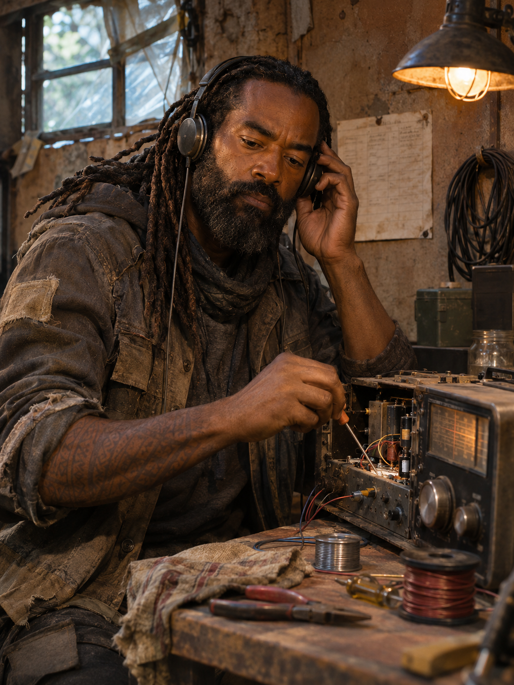
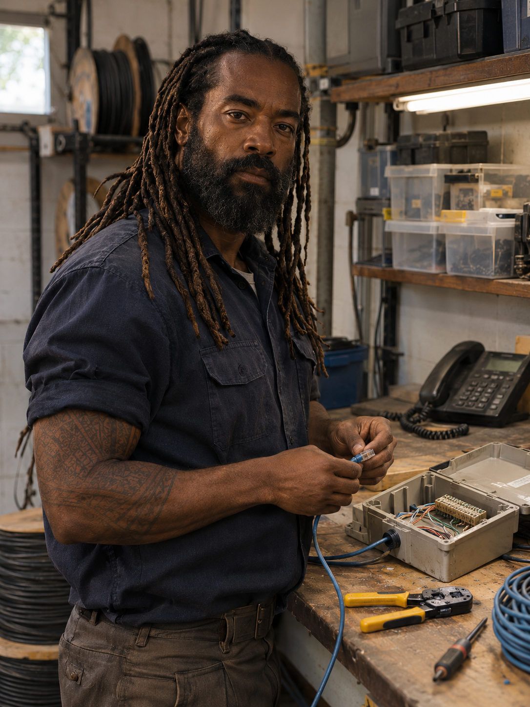
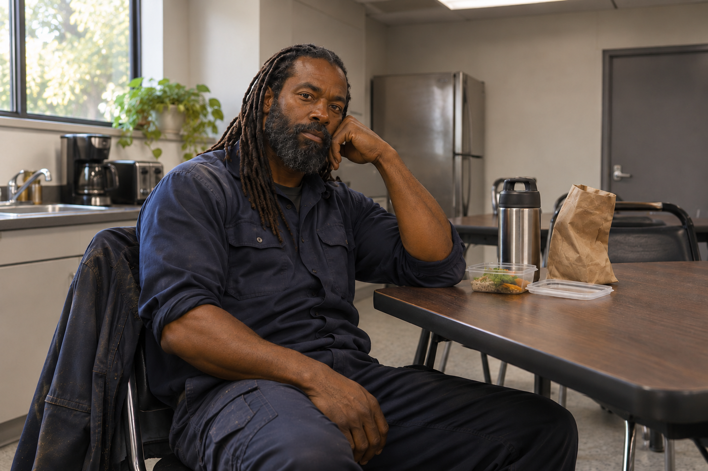

Rádio de campanha
Improvisa repetidores, filtra interferência e organiza horários de escuta para que os abrigos gastem menos energia.
O SINAL SÓ É ÚTIL SE ALGUÉM SOUBER RESPONDERQuando as torres caíram, Darius aprendeu a fazer uma voz atravessar o silêncio. Hoje mantém rádios, relés e pequenas comunidades ligadas — e deixa sempre uma frequência aberta para Chloe voltar.

Background ampliado a pedido do autor // detalhes abertos para revisão
Antes do Dia D, Darius trabalhava como técnico de manutenção para uma empresa local de telefone e internet. Passava os dias atendendo chamados em casas, lojas e pequenos escritórios: encontrava cabos rompidos, trocava conectores, ajustava modems e explicava por que uma linha tinha parado de funcionar.
A vida dele tinha o ritmo dos serviços agendados, do café que esfriava na van e das ferramentas que voltavam sempre para o mesmo lugar. Darius gostava de resolver problemas com as próprias mãos e guardava manuais antigos para consultar quando um defeito fugia do procedimento comum. Era um trabalho estável, útil e sem cerimônia.
Quando o Dia D chegou, Chloe já era sua esposa e Micah, seu filho. Os primeiros chamados ainda pareciam falhas de rede em grande escala; as ligações caíam, as ruas se enchiam e nenhuma central conseguia acompanhar o que acontecia. Darius reuniu as ferramentas que podia carregar e colocou a própria experiência a serviço de manter os três juntos e em movimento.
O transmissor veio depois. Em cada abrigo por onde passaram, Darius tentava recuperar um rádio ou uma linha de contato. Nunca confundiu o trabalho com a prioridade: Chloe e Micah precisavam saber que ele ainda estava por perto.
No presente, mantém rádios e relés comunitários funcionando, organiza horários de escuta para poupar baterias e ensina outras pessoas a fazer reparos básicos. Seu cuidado ainda tem o som breve de um teste de frequência: “Chloe, confirma recepção.”
“Se alguém ainda consegue responder, a gente ainda não está sozinho.”
Uma oficina de manutenção e uma pausa no meio do expediente. Antes do colapso, essas eram partes simples da vida de Darius.


Darius não chama isso de heroísmo. Para ele, manter uma frequência viva é uma forma prática de cuidar de quem está longe.
Improvisa repetidores, filtra interferência e organiza horários de escuta para que os abrigos gastem menos energia.
O SINAL SÓ É ÚTIL SE ALGUÉM SOUBER RESPONDERQuando Chloe demora a voltar, Darius encontra defeitos em equipamentos que já estão funcionando. Micah percebe; nenhum dos dois o denuncia.
FAMÍLIA BENNETT // CHLOE + DARIUS + MICAHChloe mantém o perímetro. Darius mantém a linha aberta. E Micah sabe distinguir a voz de cada um antes mesmo da chamada terminar.
ABRIR ARQUIVO DA FAMÍLIA →